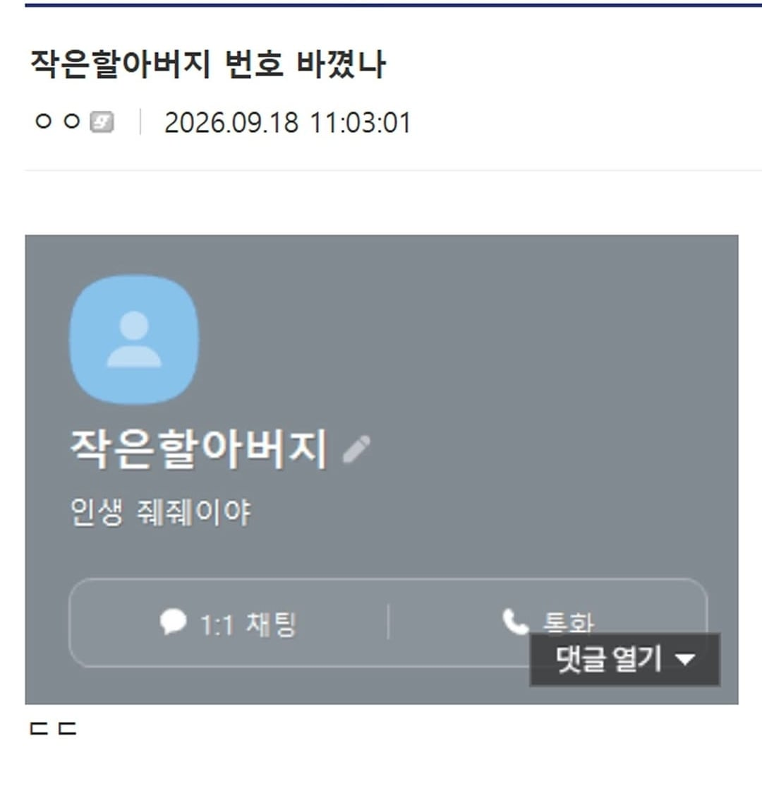

42 · 10 · 6 시간 전 · 원문

수집 당시 댓글 10개
뒷뜰 · 11 시간 전
동행복권 · 10 시간 전
ㅈㅈㅇㅇ
고추건조기 · 8 시간 전
작은할아버지 정도 연세시면 인생을 좀 아실법도 하지
코룽 · 7 시간 전
JJ야
어벤타허니잼 · 7 시간 전
돌아가셨으면 줴줴이야가 맞긴함
번째의자아 · 6 시간 전
줴줴이야가 먼 뜻임???
↳ 답글 · 흑색벨루가 · 6 시간 전
게임 서렌칠때 GG치는거 그냥 굿게임이라는 뜻이긴함
↳ 답글 · 번째의자아 · 6 시간 전
딱딱구리 · 6 시간 전
요이~엄. 줴줴이야 야르 ㅋ
즈어찌니 · 1 시간 전
하늘나라 야르~
ㅈㅈㅇㅇ